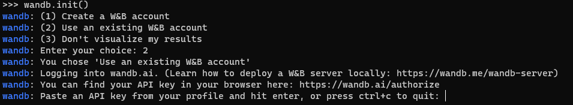
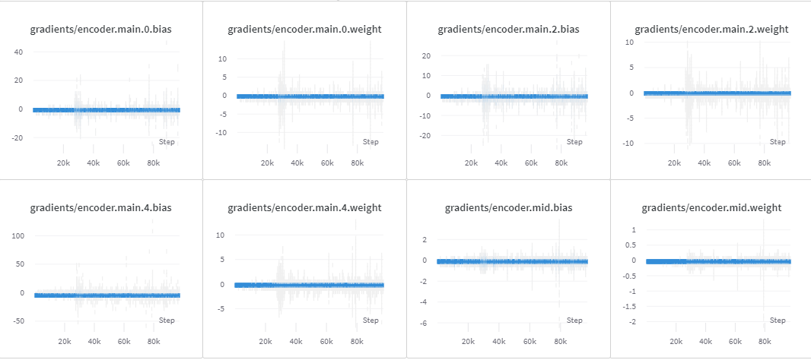
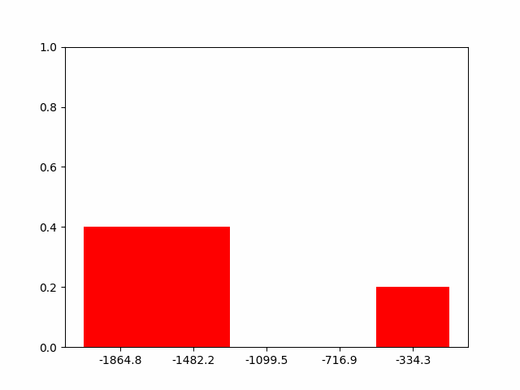

Wandb¶
概述¶
Wandb (Weights & Bias) 是一种机器学习可视化工具，可用于机器学习实验的可视化和跟踪。相比于 tensorboard 等可视化方法，wandb 的使用更为简便，且能够实时上传到在线平台。wandb 还提供了协作式 report 平台，便于整理可视化结果。 wandb的官方文档在 wandb 中。DI-engine内置了基于 wandb 的中间件wandb_online_logger和__wandb_offline_logger__。
{kind=link}
使用方法¶
wandb 登录¶
交互式 shell 登录 wandb
在 wandb authorize 注册后，将 key 输入交互式shell：
非交互式登录 wandb
需要将 username 和 key 存储到
/root/.netrc。wandb 会自动读取登录信息，并将可视化数据上传到用户对应的账号中。machine api.wandb.ai login <username> password <key>
{kind=link}
wandb 初始化¶
中间件默认初始化为 wandb.init()，如果需要设置项目名，执行名及config，需要在模型创建前执行：
wandb.init(
# Set the project where this run will be logged
project='QbertNoFrameskip-v4',
# We pass a run name (otherwise it’ll be randomly assigned, like sunshine-lollypop-10)
name=f"dqn",
# Track hyperparameters and run metadata
config=cfg
)
wandb 中间件调用方法¶
将如下代码添加至task执行过程中：
# wandb_online_logger
task.use(wandb_online_logger(cfg.policy.logger, evaluator_env, model))
# wandb_offline_logger
task.use(wandb_offline_logger(cfg.policy.logger, evaluator_env, model, cfg.policy.collect.data_path))
DI-engine 内置 wandb 中间件支持功能¶
metric 可视化¶
wandb 中间件内置了常见 metric 的可视化，包含 q_value, target q_value, loss, lr, entropy。当 config 中的 plot_logger=True时，中间件会自动从 eval 输出中选择对应字段的数据可视化：
{kind=link}
折线图的横纵轴，平滑度等可以登录 wandb ， 在 dashboards 中设置。
gradient 可视化¶
wandb 中间件会自动保存 model 中 gradient 的分布：
{kind=link}
replay 可视化¶
wandb 中间件会自动保存每个 batch 中 reward 最高、中等和最低的三个 trajectory 的 replay
q value & action probability 可视化¶
当 config 中 action_logger='q value'时，中间件会将 reward 最高、中等和最低的三个 trajectory 中，每一帧各个 action 对应的 q value 可视化。当 config 中 action_logger='action probability'时，中间件会将 action 对应的 probability 可视化：
{kind=link}
return distribution 可视化
wandb 中间件默认可视化 evaluate 时的 return distribution：
{kind=link}
数据集可视化
仅 wandb_offline_logger 支持数据集可视化。当 config 中 vis_dataset=True时，中间件会读取 record_path路径下的数据集，进行 t-SNE 降维可视化：
{kind=link}
wandb 中间件 config 示例¶
wandb_online_logger
logger=dict(record_path = './video_qbert_dqn'
gradient_logger=True,
plot_logger= True,
action_logger = 'action probability',
)
wandb_offline_logger
logger=dict(record_path = './video_pendulum_cql',
gradient_logger=True,
plot_logger= True,
action_logger = 'action probability',
vis_dataset = True
)